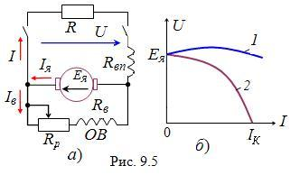

9.2.3.4. Генераторы смешанного возбуждения
У генератора смешанного возбуждения (рис. 9.5а) при согласном включении последовательной и параллельной  обмоток возбуждения их магнитные потоки складываются, и дополнительная ЭДС, обусловленная магнитным потоком последовательной обмотки, компенсирует падение напряжения в обмотке якоря и уменьшение ЭДС Ея от снижения тока возбуждения. В этом случае при изменении тока нагрузки I напряжение U остаётся практически постоянным (кривая 1, рис. 9.5а).